Ces travaux pratiques se base sur le cours de base pour les développeurs Android fourni par Google afin de les préparer pour le test de certification Associate Android Developer. Vous obtiendrez le plus de valeur de ce TP si vous travaillez successivement dans les codelabs.
La barre d'application (également appelée barre d'action) est un espace dédié situé en haut de chaque écran d'activité. Lorsque vous créez une activité à partir du modèle d'activité de base, Android Studio comprend une barre d'application.
Le menu des options de la barre d'applications propose généralement des options de navigation, telles que la navigation vers une autre activité de l'application. Il peut également fournir des choix qui affectent l'utilisation de l'application elle-même, par exemple des façons de modifier les paramètres ou les informations de profil, ce qui se produit généralement dans le cadre d'une activité distincte.
Dans cette pratique, vous apprendrez à configurer la barre d'applications et le menu d'options de votre application. La figure ci-dessous illustre les éléments que vous pouvez configurer.
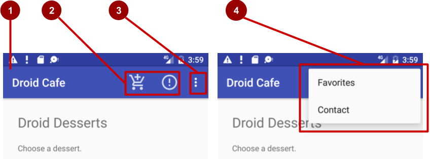
Dans la figure ci-dessus:
Les éléments du menu Options apparaissent dans le menu déroulant des options (voir la figure ci-dessus). Cependant, vous pouvez placer certains éléments sous forme d'icônes - autant que peuvent tenir - dans la barre d'application. L'utilisation de la barre d'applications pour le menu des options rend votre application cohérente avec les autres applications Android, permettant aux utilisateurs de comprendre rapidement comment utiliser votre application et de vivre une expérience inoubliable.
Vous pouvez également créer une application qui affiche une boîte de dialogue pour demander le choix d'un utilisateur, comme une alerte qui oblige les utilisateurs à appuyer sur OK ou Cancel. Une boîte de dialogue est une fenêtre qui apparaît en haut de l'écran ou la remplit, interrompant le flux d'activité. Android fournit des boîtes de dialogue prêtes à l'emploi, appelées "pickers", permettant de choisir une heure ou une date. Vous pouvez les utiliser pour vous assurer que vos utilisateurs choisissent une heure ou une date valide, formatée correctement et ajustée à l'heure et à la date locales de l'utilisateur. Dans cette pratique, vous allez également créer une application avec le sélecteur de date "date picker".
Vous devriez être familier avec:
Une application appelée Droid Cafe, illustrée dans la figure ci-dessous, créée à l'aide du modèle d'activité de base "Basic Activity" (dans la dernière version d'Android Studio, le nom a changé, Basic Views Activity). Ce modèle fournit également un menu d'options squelettiques dans la barre d'applications en haut de l'écran.
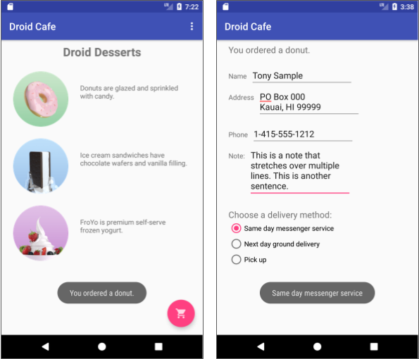
Pour cet exercice, vous utilisez la barre d'outils Toolbar de la bibliothèque Androidx appcompat en tant que barre d'applications, qui fonctionne sur la plus large gamme de périphériques et vous donne également la possibilité de personnaliser votre barre d'applications ultérieurement, au fur et à mesure du développement de votre application. Pour en savoir plus sur les considérations de conception relatives à l'utilisation de la barre d'application, voir Responsive layout grid dans la spécification de conception "Material Design".
Vous créez une nouvelle application qui affiche une boîte de dialogue d'alerte. La boîte de dialogue interrompt le flux de travail de l'utilisateur et oblige celui-ci à faire un choix.
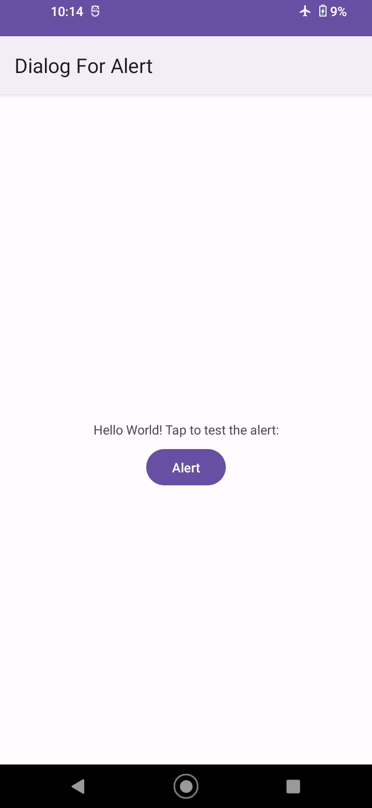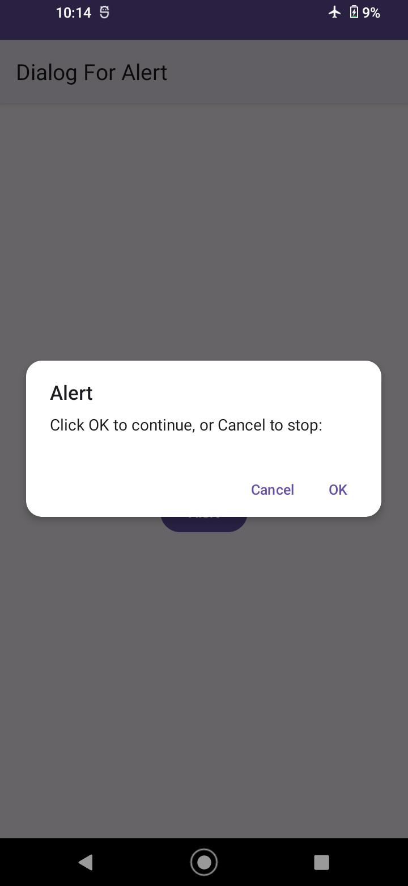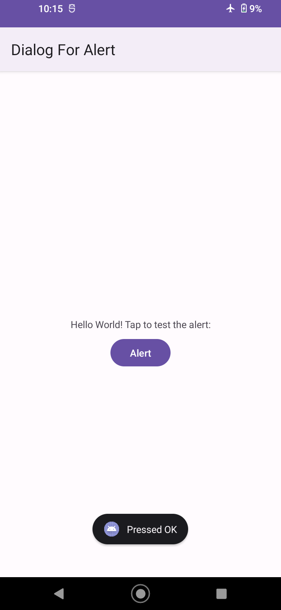
Vous créez également une application qui fournit un bouton pour afficher le sélecteur de date et convertit la date choisie en une chaîne à afficher dans un message Toast.
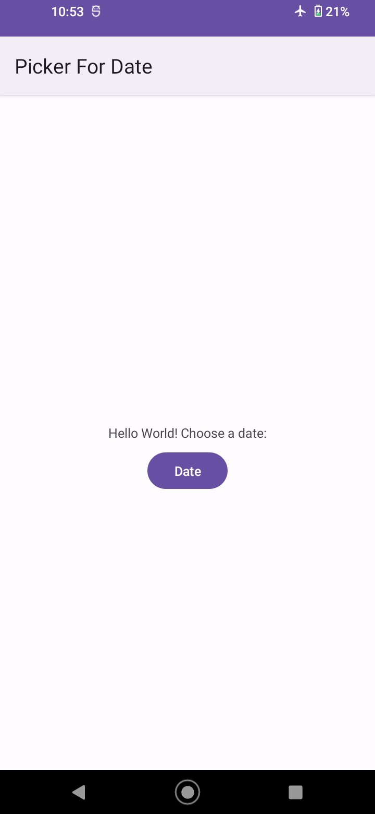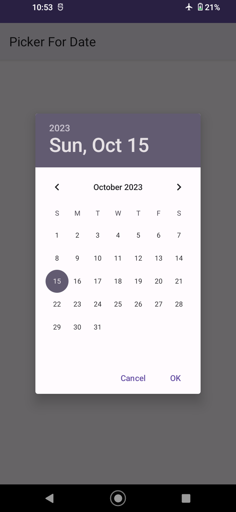
Dans cette tâche, ouvrez le projet DroidCafeInput et ajoutez des éléments de menu au menu d'options dans la barre des applications en haut de l'écran.
Pour cloner la branche droid-cafe-input du projet DroidCafeInput, vous pouvez utiliser la commande suivante :
git clone --branch droid-cafe-input [lien-repo.git]Cette commande copiera le dépôt Git du projet dans un répertoire local de la branche spécifiée. Le répertoire local aura le même nom que le dépôt Git.
Ouvrez l'application DroidCafeInput et examinez les fichiers de mise en page suivants dans le dossier res > layout:
MainActivity, le premier écran visible par l'utilisateur.MainActivity est incluse dans le fichier activity_main.xml, comme vous le verrez bientôt.OrderActivity.Suivez ces étapes:
app:layout_behavior de ConstraintLayout est défini sur @string/appbar_scrolling_view_behavior, qui contrôle le défilement de l'écran par rapport à la barre d'applications en haut. (Cette ressource de chaîne est définie dans un fichier généré appelé values.xml, que vous ne devez pas modifier.)CoordinatorLayout avec une présentation AppBarLayout intégrée. Les balises CoordinatorLayout et AppBarLayout nécessitent des noms complets spécifiant android.support.design, qui est la bibliothèque de prise en charge de la conception Android "Android Design Support Library".AppBarLayout est comme un LinearLayout vertical. Il utilise la classe Toolbar de la bibliothèque de support, au lieu du ActionBar natif, pour implémenter une barre d'application. La barre d'outils "Toolbar" de cette présentation a l'id "toolbar", et est également spécifiée, comme pour AppBarLayout, avec un nom complet (androidx.appcompat.widget.Toolbar).
La barre d'applications est une section en haut de l'écran permettant d'afficher le titre de l'activité, la navigation et d'autres éléments interactifs. Le ActionBar natif se comporte différemment selon la version d'Android exécutée sur le périphérique. Pour cette raison, si vous ajoutez un menu d'options, vous devez utiliser la barre d'outils "Toolbar" de la bibliothèque de support Android Jetpack (androidx) en tant que barre d'applications. L'utilisation de la barre d'outils "Toolbar" facilite la configuration d'une barre d'applications qui fonctionne sur la plus large gamme de périphériques et vous permet également de personnaliser votre barre d'applications ultérieurement, au fur et à mesure du développement de votre application. La barre d'outils "Toolbar" inclut les fonctionnalités les plus récentes et fonctionne pour tout périphérique pouvant utiliser la bibliothèque de support.
La présentation (layout) activity_main.xml utilise également une instruction include layout pour inclure la présentation (layout) entière définie dans content_main.xml. Cette séparation des définitions de présentation (layout) facilite la modification du contenu de la présentation (layout) en dehors de la définition de la barre d'outils de la présentation (layout) et de la présentation (layout) du coordinateur. Il est recommandé de séparer votre contenu (qui doit éventuellement être traduit) du format de votre mise en page (layout).
Droid Cafe). Il montre également le bouton de débordement d'action (trois points verticaux) sur le côté droit. Appuyez sur le bouton de débordement pour afficher le menu des options qui, à ce stade, n'a qu'une option, Settings.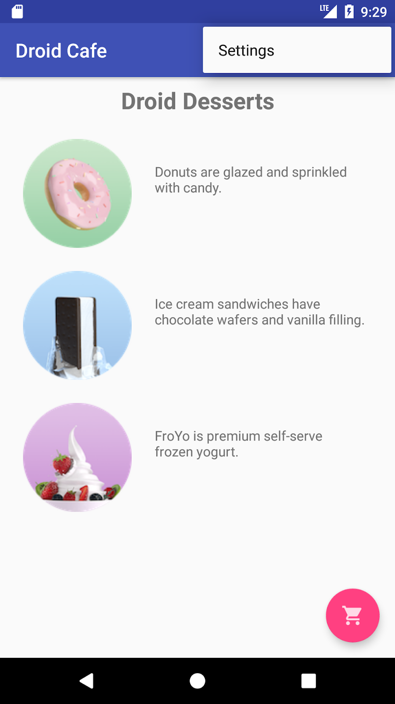
MainActivity est définie pour utiliser le thème NoActionBar. Ce thème est défini dans le fichier styles.xml (ouvrez app > res > values > styles.xml pour le voir). Vous pouvez constater que le thème NoActionBar définit l'attribut windowActionBar sur false (pas de barre d'application Window) et l'attribut windowNoTitle sur true (pas de titre). Ces valeurs sont définies car vous définissez la barre d'applications avec AppBarLayout, plutôt que d'utiliser un ActionBar. L'utilisation de l'un des thèmes NoActionBar empêche l'application d'utiliser la classe ActionBar native pour fournir la barre d'applications.AppCompatActivity et commence par la méthode onCreate(), qui définit la vue du contenu sur la présentation (layout) activity_main.xml et définit la barre d'outils sur la barre d'outils (Toolbar) définie dans la présentation (layout). Il appelle ensuite setSupportActionBar() et lui transmet la barre d'outils(Toolbar), en définissant la barre d'outils (Toolbar) comme barre d'application de l'activité.Pour connaître les meilleures pratiques concernant l'ajout de la barre d'applications à votre application, voir Add the app bar.
Vous allez ajouter les éléments de menu suivants au menu des options:
OrderActivity pour voir la commande de desserts.Android fournit un format XML standard pour définir les éléments de menu. Au lieu de créer un menu dans votre code d'activité, vous pouvez définir un menu et tous ses éléments de menu dans une ressource de menu XML. Vous pouvez ensuite gonfler (inflate) la ressource de menu (la charger en tant qu'objet de Menu) dans votre activité:
action_settings (le choix Settings), défini comme suit:<item
android:id="@+id/action_settings"
android:orderInCategory="100"
android:title="@string/action_settings"
app:showAsAction="never" />action_settings pour en faire l'élément action_contact (ne modifiez pas l'attribut android:orderInCategory existant):Attribut | Valeur |
android:id | "@+id/action_contact" |
android:title | "Contact" |
app:showAsAction | "never" |
"Contact" codée en dur dans la ressource chaîne action_contact.item dans le bloc menu et attribuez-lui les attributs suivants:Attribut | Valeur |
android:id | "@+id/action_order" |
android:orderInCategory | "10" |
android:title | "Order" |
app:showAsAction | "never" |
L'attribut android:orderInCategory spécifie l'ordre dans lequel les éléments de menu apparaissent dans le menu, le nombre le plus bas apparaissant plus haut dans le menu. L'élément Contact est défini sur 100, ce qui est un grand nombre afin de spécifier qu'il apparaît en bas et non en haut. Vous définissez le poste de Order sur 10, ce qui le place au-dessus de Contact et laisse beaucoup de place dans le menu pour d'autres articles.
"Order" codée en dur dans la ressource chaîne action_order.Attribut d'élément Status | Valeur |
android:id | "@+id/action_status" |
android:orderInCategory | "20" |
android:title | "Status" |
app:showAsAction | "never" |
Attribut d'élément Favorites | Valeur |
android:id | "@+id/action_favorites" |
android:orderInCategory | "30" |
android:title | "Favorites" |
app:showAsAction | "never" |
"Status" dans la ressource statut_action, et "Favoris" dans la ressource action_favorites.Toast avec un message d'action en fonction de l'élément de menu sélectionné par l'utilisateur. Ouvrez strings.xml et ajoutez les noms de chaîne et les valeurs suivants pour ces messages:<string name="action_order_message">You selected Order.</string>
<string name="action_status_message">You selected Status.</string>
<string name="action_favorites_message">You selected Favorites.</string>
<string name="action_contact_message">You selected Contact.</string>if dans la méthode onOptionsItemSelected() en remplaçant l'id action_settings par le nouvel id action_order:if (id == R.id.action_order)Exécutez l'application et appuyez sur l'icône de débordement d'action, illustrée à gauche de la figure ci-dessous, pour afficher le menu d'options affiché à droite de la figure ci-dessous. Vous allez bientôt ajouter des rappels (callbacks) pour répondre aux éléments sélectionnés dans ce menu.
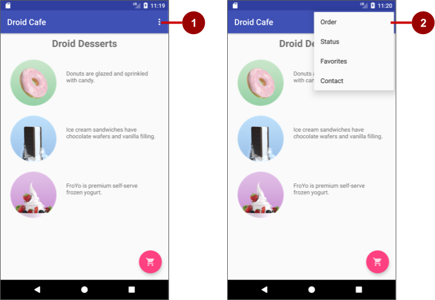
Dans la figure ci-dessus:
Notez l'ordre des éléments dans le menu des options. Vous avez utilisé l'attribut android:orderInCategory pour spécifier la priorité des éléments de menu du menu: Lélément Order est 10, suivi de Status (20) et Favorites (30), et Contact est le dernier (100). Le tableau suivant indique la priorité des éléments du menu:
Élément du menu | attribut orderInCategory |
Order | 10 |
Status | 20 |
Favorites | 30 |
Contact | 100 |
Autant que possible, vous voulez montrer les actions les plus fréquemment utilisées en utilisant des icônes dans la barre d'application afin que l'utilisateur puisse cliquer dessus sans avoir à cliquer sur l'icône de débordement. Dans cette tâche, vous ajoutez des icônes pour certains éléments de menu et affichez certains de ces éléments dans la barre d'applications en haut de l'écran sous forme d'icônes.
Dans cet exemple, supposons que les actions Order et Status sont les plus fréquemment utilisées. L'action Favorites est parfois utilisée et Contact est le moins fréquemment utilisé. Vous pouvez définir des icônes pour ces actions et spécifier les éléments suivants:
Pour spécifier des icônes pour des actions, vous devez d'abord les ajouter en tant qu'images dans le dossier "drawable". Utilisez les icônes suivantes (ou similaires):
Pour les icônes Status et Favorites, procédez comme suit:
Pour afficher les éléments de menu sous forme d'icônes dans la barre des applications, utilisez l'attribut app:showAsAction dans menu_main.xml. Les valeurs suivantes pour l'attribut spécifient si l'action doit ou non apparaître sous la forme d'une icône dans la barre d'applications:
"always": Apparaît toujours dans la barre d'applications. (S'il n'y a pas assez de place, il est possible que d'autres icônes de menu se chevauchent.)"ifRoom": Apparaît dans la barre d'applications s'il y a de la place."never": N'apparaît jamais dans la barre d'applications; son texte apparaît dans le menu débordement.Suivez ces étapes pour afficher certains éléments de menu sous forme d'icônes:
Attribut d'élément "Order" | Ancienne valeur | Nouvelle valeur |
android:icon | none | "@drawable/ic_shopping_cart" |
app:showAsAction | "never" | "always" |
Attribut d'élément "Status" | Ancienne valeur | Nouvelle valeur |
android:icon | none | "@drawable/ic_status_info" |
app:showAsAction | "never" | "always" |
Attribut d'élément "Favorites" | Ancienne valeur | Nouvelle valeur |
android:icon | none | "@drawable/ic_favorite" |
app:showAsAction | "never" | "ifRoom" |
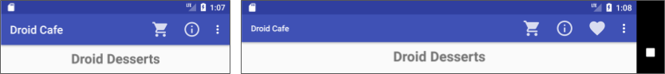
Combien de boutons d'action vont tenir dans la barre d'application? Cela dépend de l'orientation et de la taille de l'écran de l'appareil. Moins de boutons apparaissent dans une orientation verticale, comme indiqué à gauche de la figure ci-dessus, par rapport à une orientation horizontale comme indiqué à droite de la figure. Les boutons d'action ne peuvent occuper plus de la moitié de la largeur de la barre d'application principale.
Dans cette tâche, vous ajoutez une méthode pour afficher un message sur l'élément de menu sélectionné et utilisez la méthode onOptionsItemSelected() pour déterminer l'élément de menu sélectionné.
Toast, ajoutez-le maintenant. Vous l'utilisez comme action à entreprendre pour chaque choix de menu. (Normalement, vous devez implémenter une action pour chaque élément de menu, telle que le démarrage d'une autre activité, comme indiqué plus loin dans cette pratique.)public void displayToast(String message) {
Toast.makeText(getApplicationContext(), message,
Toast.LENGTH_SHORT).show();
}La méthode onOptionsItemSelected() gère les sélections dans le menu d'options. Vous allez ajouter un bloc "switch case" pour déterminer quel élément de menu a été sélectionné et quelle action entreprendre.
onOptionsItemSelected() fournie par le modèle. La méthode détermine si un certain élément de menu a été cliqué, en utilisant l'identifiant de l'élément de menu. Dans l'exemple ci-dessous, l'id est action_order:@Override
public boolean onOptionsItemSelected(MenuItem item) {
int id = item.getItemId();
if (id == R.id.action_order) {
return true;
}
return super.onOptionsItemSelected(item);
}int id et l'instruction if par le bloc switch case suivant, qui définit le message approprié en fonction de id de l'élément de menu:@Override
public boolean onOptionsItemSelected(MenuItem item) {
switch (item.getItemId()) {
case R.id.action_order:
displayToast(getString(R.string.action_order_message));
return true;
case R.id.action_status:
displayToast(getString(R.string.action_status_message));
return true;
case R.id.action_favorites:
displayToast(getString(R.string.action_favorites_message));
return true;
case R.id.action_contact:
displayToast(getString(R.string.action_contact_message));
return true;
default:
// Ne fais rien
}
return super.onOptionsItemSelected(item);
}Toast différent à l'écran, comme indiqué à droite de la figure ci-dessous, en fonction de l'élément de menu que vous choisissez.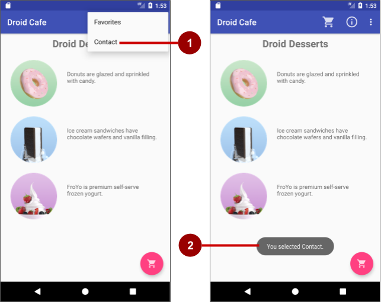
Dans la figure ci-dessus:
Toast qui apparaît.Normalement, vous devez implémenter une action pour chaque élément de menu, par exemple démarrer une autre activité. En référant l'extrait de la tâche précédente, modifiez le code de la action_order par le suivant, qui lance OrderActivity (à l'aide du même code que celui utilisé pour le bouton d'action flottante):
switch (item.getItemId()) {
case R.id.action_order:
Intent intent = new Intent(MainActivity.this, OrderActivity.class);
intent.putExtra(EXTRA_MESSAGE, mOrderMessage);
startActivity(intent);
return true;
// ... code des autres cas
}Lancer l'application. En cliquant sur l'icône du panier dans la barre d'applications (l'élément Order), vous accédez directement à l'écran OrderActivity.
Vous pouvez créer une boîte de dialogue pour demander le choix d'un utilisateur, telle qu'une alerte demandant aux utilisateurs d'appuyer sur OK ou Cancel. Un "dialog" est une fenêtre qui apparaît au-dessus de l'écran ou qui remplit celui-ci, interrompant le flux d'activité.
Par exemple, une boîte de dialogue d'alerte peut obliger l'utilisateur à cliquer sur Continue après l'avoir lue ou à lui donner le choix d'accepter une action en cliquant sur un bouton positif (tel que OK ou Accept) ou de ne pas être d'accord en cliquant sur un bouton négatif ( comme Cancel). Utilisez la sous-classe AlertDialog de la classe Dialog pour afficher une boîte de dialogue standard pour une alerte.
Dans cette pratique, vous utilisez un bouton pour déclencher une boîte de dialogue d'alerte standard. Dans une application réelle, vous pouvez déclencher une boîte de dialogue d'alerte basée sur une condition ou sur le fait que l'utilisateur tape quelque chose.
Dans cet exercice, vous créez une alerte avec les boutons OK et Cancel. L'alerte est déclenchée lorsque l'utilisateur appuie sur un bouton.
Empty Views Activity).Theme.Material3.Light et supprimez le fichier themes.xml (night). C'est juste pour avoir la même interface utilisateur, parce que le mode sombre peut être activé sur vos émulateurs ou téléphones.<style name="Base.Theme.DialogForAlert" parent="Theme.Material3.Light">TextView pour dire Hello World! Tap to test the alert: au lieu de "Hello World!"TextView. (Facultatif: limitez le bouton au bas de TextView et aux côtés de la présentation, avec des marges définies à 8dp.)TextView et Button dans strings.xml.android:onClick au bouton pour appeler le gestionnaire de clics onClickShowAlert(). Une fois que vous l'avez entré, le gestionnaire de clics est souligné en rouge car il n'a pas encore été créé.android:onClick="onClickShowAlert"Vous avez maintenant une disposition (layout) semblable à la suivante:
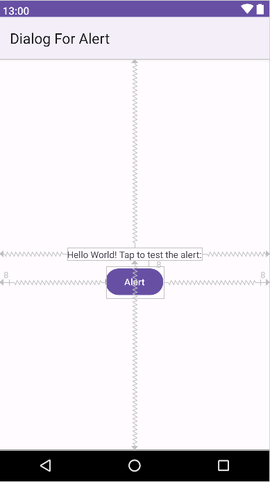
Le modèle de conception du générateur (builder) facilite la création d'un objet à partir d'une classe comportant de nombreux attributs obligatoires et facultatifs et nécessitant par conséquent de nombreux paramètres. Sans ce modèle, vous devrez créer des constructeurs pour les combinaisons d'attributs obligatoires et facultatifs. Avec ce modèle, le code est plus facile à lire et à maintenir. Pour plus d'informations sur le modèle de conception de générateur, voir Builder pattern.
La classe de générateur est généralement une classe de membre statique de la classe qu'elle génère. Utilisez AlertDialog.Builder pour créer une boîte de dialogue d'alerte standard, avec setTitle() pour définir son titre, setMessage() pour définir son message, ainsi que setPositiveButton() et setNegativeButton() pour définir ses boutons..
Pour faire l'alerte, vous devez créer un objet de AlertDialog.Builder. Vous allez ajouter le gestionnaire de clics onClickShowAlert() pour le bouton Alert, qui fait de cet objet son premier ordre de travail. Cela signifie que la boîte de dialogue ne sera créée que lorsque l'utilisateur cliquera sur le bouton d'alerte. Bien que ce modèle de codage soit logique pour l'utilisation d'un bouton pour tester une alerte, vous pouvez créer la boîte de dialogue dans la méthode onCreate() afin qu'elle soit toujours disponible pour que le code le déclenche.
kShowAlert():public void onClickShowAlert(View view) {
AlertDialog.Builder myAlertBuilder = new
AlertDialog.Builder(MainActivity.this);
// Définir le titre et le message de la boîte de dialogue.
}Si AlertDialog.Builder n'est pas reconnu au moment de la saisie, cliquez sur l'icône de l'ampoule rouge, puis choisissez la version de la bibliothèque AndroidX ( androidx.appcompat.app.AlertDialog) à importer dans votre activité.
onClickShowAlert() après le commentaire::// Définir le titre et le message de la boîte de dialogue.
myAlertBuilder.setTitle("Alert");
myAlertBuilder.setMessage("Click OK to continue, or Cancel to stop:");
// Ajouter les boutons de dialogue.alert_title et alert_message.setPositiveButton() et setNegativeButton():// Ajouter les boutons de dialogue.
myAlertBuilder.setPositiveButton("OK", new
DialogInterface.OnClickListener() {
public void onClick(DialogInterface dialog, int which) {
// L'utilisateur a cliqué sur le bouton OK.
Toast.makeText(getApplicationContext(), "Pressed OK",
Toast.LENGTH_SHORT).show();
}
});
myAlertBuilder.setNegativeButton("Cancel", new
DialogInterface.OnClickListener() {
public void onClick(DialogInterface dialog, int which) {
// L'utilisateur a annulé la boîte de dialogue.
Toast.makeText(getApplicationContext(), "Pressed Cancel",
Toast.LENGTH_SHORT).show();
}
});
// Créer et afficher l'AlertDialog.Une fois que l'utilisateur a cliqué sur le bouton OK ou Cancel dans l'alerte, vous pouvez saisir la sélection de l'utilisateur et l'utiliser dans votre code. Dans cet exemple, vous affichez un message Toast.
ok_button et cancel_button, puis extrayez les chaînes pour les messages Toast.onClickShowAlert(), ajoutez show(), qui crée et affiche ensuite la boîte de dialogue d'alerte:// Créer et afficher l'AlertDialog.
myAlertBuilder.show();Vous devriez pouvoir appuyer sur le bouton Alert, illustré à gauche de la figure ci-dessous, pour afficher la boîte de dialogue d'alerte, présentée au centre de la figure ci-dessous. La boîte de dialogue affiche les boutons OK et Cancel, et un message Toast apparaît, indiquant celui sur lequel vous avez appuyé, comme indiqué à droite de la figure ci-dessous.
Android fournit des boîtes de dialogue prêtes à l'emploi, appelées sélecteurs (pickers), permettant de choisir une heure ou une date. Vous pouvez les utiliser pour vous assurer que vos utilisateurs choisissent une heure ou une date valide, formatée correctement et ajustée à l'heure et à la date locales de l'utilisateur. Chaque sélecteur fournit des commandes permettant de sélectionner chaque partie de l'heure (heure, minute, AM / PM) ou la date (mois, jour, année). Vous pouvez tout lire sur la configuration des sélecteurs dans Pickers.
Dans cette tâche, vous allez créer un nouveau projet et ajouter le sélecteur de date. Vous apprendrez également à utiliser un Fragment, qui est un comportement ou une partie d'une interface utilisateur dans une activité. C'est comme une mini-activité au sein de l'activité principale, avec son propre cycle de vie, et elle est utilisée pour créer un sélecteur. Tout le travail est fait pour vous. Pour en savoir plus sur la classe Fragment, voir Fragments dans le Guide de l'API.
L'un des avantages de l'utilisation d'un fragment pour un sélecteur est que vous pouvez isoler les sections de code permettant de gérer la date et l'heure pour divers paramètres régionaux affichant la date et l'heure de différentes manières. La meilleure pratique pour afficher un sélecteur consiste à utiliser une instance de DialogFragment, qui est une sous-classe de Fragment. Un DialogFragment affiche une fenêtre de dialogue flottante au-dessus de la fenêtre d'activité. Dans cet exercice, vous allez ajouter un fragment pour la boîte de dialogue du sélecteur et utiliser DialogFragment pour gérer le cycle de vie de la boîte de dialogue.
Pour démarrer cette tâche, créez une application dotée d'un bouton permettant d'afficher le sélecteur de date.
Theme.Material3.Light et supprimez le fichier themes.xml (night). C'est juste pour avoir la même interface utilisateur, parce que le mode sombre peut être activé sur vos émulateurs ou téléphones.<style name="Base.Theme.PickerForDate" parent="Theme.Material3.Light">TextView à Hello World! Choose a date:.TextView. (Facultatif: limitez le bouton au bas de TextView et aux côtés de la présentation (layout), avec des marges définies à 8dp.)TextView et Button dans strings.xml.android:onClick au bouton pour appeler le gestionnaire de clics showDatePicker(). Une fois entré, le gestionnaire de clics est souligné en rouge car il n'a pas encore été créé.android:onClick="showDatePicker"Vous devriez maintenant avoir une mise en page (layout) semblable à la suivante:
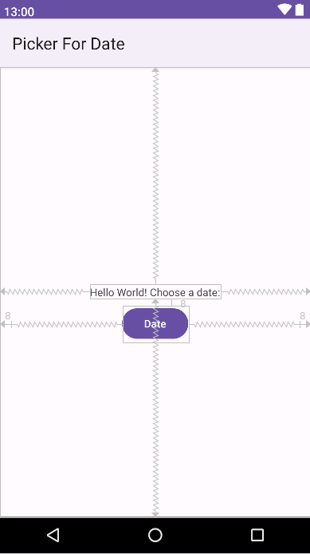
Dans cette étape, vous ajoutez un Fragment pour le sélecteur de date.
DialogFragment et implémentez DatePickerDialog.OnDateSetListener pour créer un sélecteur de date standard avec un écouteur. Voir Pickers pour plus d'informations sur l'extension du DialogFragment pour un sélecteur de date:public class DatePickerFragment extends DialogFragment
implements DatePickerDialog.OnDateSetListener {Lorsque vous entrez DialogFragment et DatePickerDialog.OnDateSetListener, Android Studio ajoute automatiquement plusieurs instructions d'importation import au bloc d'importation situé en haut, notamment:
import androidx.fragment.app.DialogFragment
import android.app.DatePickerDialog;De plus, une icône ampoule rouge apparaît dans la marge gauche après quelques secondes.
onDateSet() déjà sélectionné et l'option Insert @Override sélectionnée. Cliquez sur OK pour créer la méthode onDateSet() vide. Cette méthode sera appelée lorsque l'utilisateur définit la date.Après avoir ajouté la méthode onDateSet() vide, Android Studio ajoute automatiquement les éléments suivants dans le bloc d'importation import en haut:
import android.widget.DatePicker;Les paramètres onDateSet() doivent être int i, int i1 et int i2. Remplacez les noms de ces paramètres par des noms plus lisibles:
public void onDateSet(DatePicker datePicker,
int year, int month, int day)onCreateDialog() (Code > Override Methods) qui renvoie Dialog et supprimez par la suite la ligne de retour return, Android Studio affiche une ampoule rouge à côté de la méthode car elle ne renvoie (return) rien pour le moment.@NonNull
@Override
public Dialog onCreateDialog(@Nullable Bundle savedInstanceState) {
}onCreateDialog() pour initialiser l'année (year), le mois (month) et le jour (day) à partir de Calendar, puis renvoyez la boîte de dialogue et ces valeurs à l'activité. Lorsque vous entrez Calendar.getInstance(), indiquez que l'importation doit être java.util.Calendar.// Utiliser la date actuelle comme date par défaut dans le sélecteur.
final Calendar c = Calendar.getInstance();
int year = c.get(Calendar.YEAR);
int month = c.get(Calendar.MONTH);
int day = c.get(Calendar.DAY_OF_MONTH);
// Créer une nouvelle instance de DatePickerDialog et la retourner.
return new DatePickerDialog(getActivity(), this, year, month, day);Bien qu'une grande partie du code de MainActivity.java reste identique, vous devez ajouter une méthode qui crée une instance de FragmentManager pour gérer le Fragment et afficher le sélecteur de date.
showDatePicker() pour le bouton Date. Il crée une instance de FragmentManager à l'aide de getSupportFragmentManager() pour gérer le Fragment automatiquement et afficher le sélecteur. Pour plus d'informations sur la classe Fragment, voir Fragments.public void showDatePicker(View view) {
DialogFragment newFragment = new DatePickerFragment();
newFragment.show(getSupportFragmentManager(),"datePicker");
}"datePicker" dans la ressource de chaîne (strings.xml) en tant que datepicker.Dans cette étape, vous renvoyez la date à MainActivity.java et convertissez la date en une chaîne que vous pouvez afficher dans un message Toast.
processDatePickerResult() vide qui prend l'année (year), le mois (month) et le jour (day) comme arguments:public void processDatePickerResult(int year, int month, int day) {
}processDatePickerResult() pour convertir le mois (month), le jour (day) et l'année (year) en chaînes séparées et pour concaténer les trois chaînes avec des marques de barre oblique pour le format de date américain:String month_string = Integer.toString(month+1);
String day_string = Integer.toString(day);
String year_string = Integer.toString(year);
String dateMessage = (month_string +
"/" + day_string + "/" + year_string);Le nombre entier renvoyé par le sélecteur de date commence à compter à 0 pour janvier. Vous devez donc ajouter 1 pour afficher les mois à partir de 1.
Toast:Toast.makeText(this, "Date: " + dateMessage,
Toast.LENGTH_SHORT).show();"Date:" codée en dur dans une ressource chaîne nommée date.onDateSet() pour appeler processDatePickerResult() dans MainActivity et transmettez-le l'année (year), le mois (month) et le jour (day):@Override
public void onDateSet(DatePicker datePicker,
int year, int month, int day) {
MainActivity activity = (MainActivity) getActivity();
activity.processDatePickerResult(year, month, day);
}Vous utilisez getActivity() qui, lorsqu'il est utilisé dans un Fragment, renvoie l'activité à laquelle le Fragment est actuellement associé. Vous en avez besoin car vous ne pouvez pas appeler une méthode dans MainActivity sans le contexte de MainActivity (vous devrez plutôt utiliser une intention (Intent), comme vous l'avez appris dans une autre leçon). L'activité hérite du contexte, vous pouvez donc l'utiliser comme contexte pour appeler la méthode (comme dans activity.processDatePickerResult).
Toast, comme indiqué à droite de la figure suivante.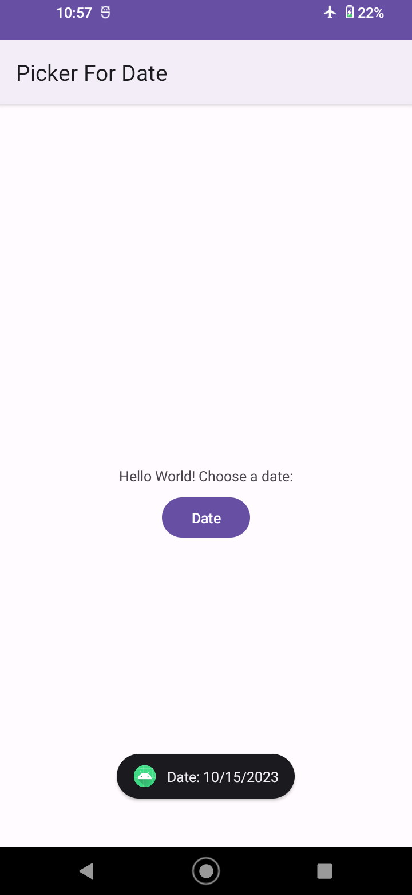
Fournissez un menu d'options et une barre d'applications:
CoordinatorLayout avec une disposition (layout) intégrée AppBarLayout. AppBarLayout est comme un LinearLayout vertical. Il utilise la classe Toolbar de la bibliothèque de support, au lieu du ActionBar natif, pour implémenter une barre d'application.AndroidManifest.xml afin que l'activité .MainActivity soit définie pour utiliser le thème NoActionBar. Ce thème est défini dans le fichier styles.xml.MainActivity pour étendre AppCompatActivity et commence par la méthode onCreate(), qui définit la vue de contenu et la barre d'outils (Toolbar). Il appelle ensuite setSupportActionBar() et lui transmet la barre d'outils (Toolbar), en définissant la barre d'outils (Toolbar) comme barre d'application de l'activité.menu_main.xml. L'attribut android:orderInCategory spécifie l'ordre dans lequel les éléments de menu apparaissent dans le menu, le nombre le plus bas apparaissant plus haut dans le menu.onOptionsItemSelected() pour déterminer l'élément de menu utilisé.Ajouter une icône pour un élément de menu d'options:
Afficher les éléments de menu sous forme d'icônes dans la barre d'applications:
app:showAsAction dans menu_main.xml avec les valeurs suivantes."always": apparaît toujours dans la barre d'applications. (S'il n'y a pas assez de place, il est possible que d'autres icônes de menu se chevauchent.)"ifRoom": Apparaît dans la barre d'applications s'il y a de la place."never": n'apparaît jamais dans la barre d'applications; son texte apparaît dans le menu débordement.Utiliser un dialogue d'alerte:
AlertDialog de la classe Dialog pour afficher une boîte de dialogue standard pour une alerte.AlertDialog.Builder pour créer une boîte de dialogue d'alerte standard, avec setTitle() pour définir son titre, setMessage() pour définir son message, ainsi que setPositiveButton() et setNegativeButton() pour définir ses boutons.Utilisez un sélecteur pour la saisie de l'utilisateur:
DialogFragment, une sous-classe de Fragment, pour créer un sélecteur tel que le sélecteur de date ou le sélecteur d'heure.DialogFragment et implémentez DatePickerDialog.OnDateSetListener pour créer un sélecteur de date standard avec un écouteur. Inclure onDateSet() dans ce Fragment.onCreateView() par onCreateDialog() qui renvoie Dialog. Initialisez la date du sélecteur de date à partir de l'agenda Calendar et renvoyez la boîte de dialogue et ces valeurs à l'activité.FragmentManager à l'aide de getSupportFragmentManager() pour gérer le Fragment et afficher le sélecteur de date.Documentation d'Android Studio:
Documentation développeur Android:
ToolbarAppBarLayoutonOptionsItemSelected()ViewMenuInflaterregisterForContextMenu()onCreateContextMenu()onContextItemSelected()AlertDialogDialogFragmentFragmentManagerCalendarSpécifications de conception Material Design:
Autre:
Ouvrez l'application DroidCafeOptions que vous avez créée dans cette leçon.
Toast.Quel est le nom du fichier dans lequel vous créez des éléments de menu d'options? Choisissez-en un:
Quelle méthode est appelée quand un élément du menu d'options est cliqué? Choisissez-en un:
onOptionsItemSelected(MenuItem item)onClick(View view)onContextItemSelected()onClickShowAlert()Lequel des énoncés suivants définit le titre d'un dialogue d'alerte? Choisissez-en un:
myAlertBuilder.setMessage("Alert");myAlertBuilder.setPositiveButton("Alert");myAlertBuilder.setTitle("Alert");AlertDialog.Builder myAlertBuilder = new AlertDialog.Builder("Alert");Où créez-vous un DialogFragment pour un sélecteur de date? Choisissez-en un:
onCreate() de l'activité d'hébergement.onCreateContextMenu() dans Fragment.onCreateView() de l'extension DialogFragment.onCreateDialog() dans l'extension de DialogFragment.Vérifiez que l'application présente les fonctionnalités suivantes:
DialogFragment.OrderActivity pour afficher le sélecteur de date (reportez-vous au centre de la figure).Toast dans OrderActivity avec la date choisie (reportez-vous au côté droit de la figure).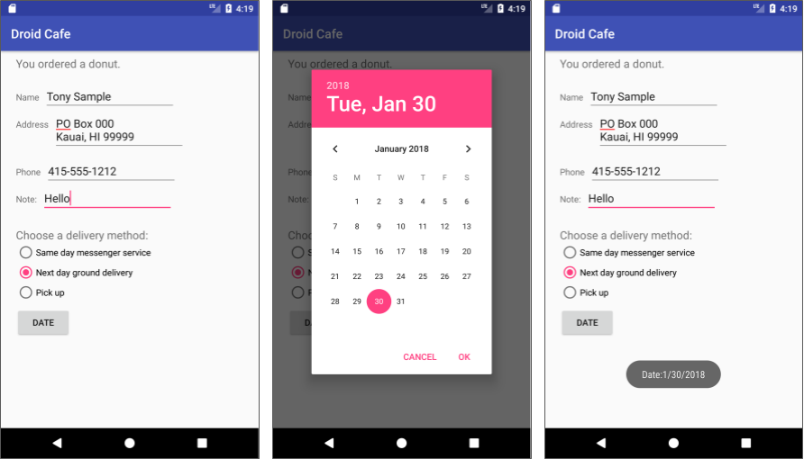